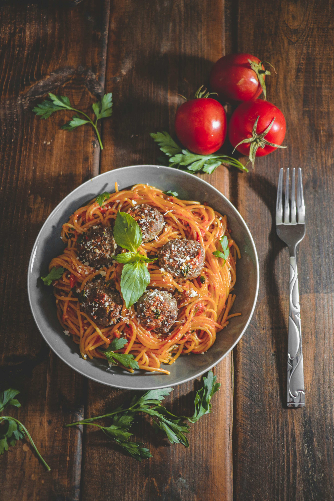

Spaghetti and Meatballs Recipe

Description
This is an Italian-style pasta with homemade meatballs that's cooked slowly
over low heat for an intense tomato flavor. It's easy to make the spaghetti sauce
ahead of time; gently reheat and add meatballs 30 minutes before you're ready to
serve with your favorite pasta.
Ingredients
- 1 pound lean ground beef
- 1 cup fresh bread crumbs
- 1 tablespoon dried parsley
- 1 tablespoon grated Parmesan cheese
- ¾ cup chopped onion
- 2 (28 ounce) cans whole peeled tomatoes
- 12 ounce of spaghetti
- ¾ teaspoon dried basil
Steps
- Heat the olive oil in a large saucepan over medium heat, and cook the onion until lightly brown.Mix in 2 cloves garlic, and cook 1 minute. Stir in crushed tomatoes, tomato paste, water, sugar, 1/2 the oregano, and bay leaf. Season with salt and pepper. Bring to a boil, reduce heat to low, and simmer while preparing meatballs.
- In a bowl, mix the ground round, bread crumbs, remaining oregano, remaining garlic, parsley, eggs, and cheese. Season with salt and pepper. Roll into 1 inch balls, and drop into the sauce. Cook 40 minutes in the sauce, or until internal temperature of meatballs reaches a minimum of 160 degrees F (72 degrees C).
- Bring a large pot of lightly salted water to a boil, and stir in the spaghetti. Cook 8 to 10 minutes, until al dente, and drain. Serve the meatballs and sauce over the cooked spaghetti.